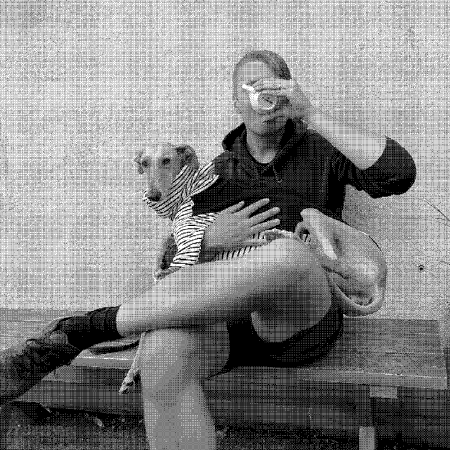

A fun, educational, and potentieally highly-caffeinated experience awaits! You will be guided through a coffee tasting consisting of several different coffees. The tasting is designed to teach you about coffee in general; where it's grown, how it's processed and roasted, and how that affects what you prefer. My goal is for you to leave the tasting with a better understanding and appreciation of the murky bean juice most of us drink every day and for you to know what you like.
Time: Around 2h
Price: 500kr/person
I have many years of experience working with coffee and coffee-related things, both in Sweden and Australia. Everything from being a barista to renovating vintage espresso machines. Outside of coffee I have a degree in Product Design Engineering and most of my career has been in the field of data and AI.
Coffee tastings can be organised both on location at your office or remotely depending on where people are located and the coffee samples are then sent out to each team member. After the tasting some of the coffees tasted will be available for purchase.
Feel free to contact me if you have questions or want to book a tasting!